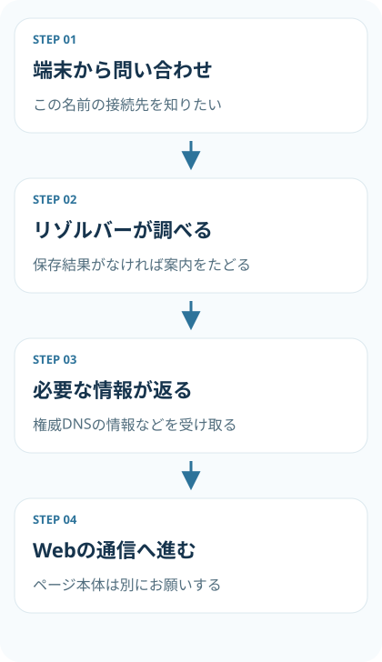

ブラウザにサイトの名前を入力すると、なぜ遠くにある相手へつながるのでしょうか。example.comという文字だけを見ても、ネットワーク上の送り先が直接書かれているわけではありません。そこで働くのがDNSです。今回はページの本文を取りに行く前の、「接続先を調べる」部分を見てみましょう。
01 — DIGITAL BASICS
DNSは、名前に対応する情報を調べる仕組み
DNSはDomain Name Systemの略です。ドメイン名に対応する情報を調べるための仕組みで、Webを見る場面ではIPアドレスを知る手がかりになります。IPアドレスは通信先の識別に使う番号です。DNSが記事本文や写真を届けるのではなく、調べた結果をもとに別の通信が始まります。
DNSを電話帳にたとえることがあります。名前から連絡先を探す点は似ていますが、世界に一冊の巨大な電話帳があるわけではありません。名前の階層に応じて情報の管理が分かれ、必要に応じて問い合わせ先をたどります。
02 — DIGITAL BASICS
調べてくれる係と、情報を管理する係
端末の依頼を受けて調査する係を、ここではリゾルバーと呼びます。実際には端末内の処理と、ネットワーク上で問い合わせを進める処理が分かれています。身近なイメージとしては、端末の代わりに必要な情報を探してくれる窓口です。
一方、対象のドメインの情報を責任を持って提供する側が権威DNSサーバーです。リゾルバーが答えをまだ持たないときは、ルート、comなどのトップレベルドメイン、対象の権威DNSといった順で案内をたどります。名前の階層を分担して管理するため、一つの場所が全サイトの情報を抱えなくて済みます。
この節の参考：資料2

03 — DIGITAL BASICS
前に調べた答えを、しばらく使う
毎回最初から問い合わせると手間が増えるため、調べた答えを一時保存するキャッシュが使われます。有効な保存結果があれば、それを使って先へ進めます。端末やリゾルバーなどに保存されることがあり、図にあるすべての問い合わせが毎回行われるとは限りません。
DNSの記録にはTTLという、キャッシュしてよい期間の目安となる値があります。設定を変えた後も保存済みの答えが残ることがあるため、見る場所やタイミングで結果が違う場合があります。「変更したら世界中が必ず同時に切り替わる」と考えないことが大切です。
04 — DIGITAL BASICS
DNSの答えが分かってから、ページをお願いする
IPアドレスなどの手がかりが得られると、ブラウザはページの配信先へ通信を進めます。DNSへの「接続先を教えて」と、Webサーバーへの「ページをください」は、別の問い合わせです。DNSが答えられてもページの配信側に問題があれば表示できないことがあります。
反対に名前を調べる段階で失敗すれば、ページをお願いするところまで進めないことがあります。ただし画面のエラーだけで原因を一つに決めることはできません。名前を調べる段階と、内容を受け取る段階に分けると、ネットの仕組みを落ち着いて考えられます。
REMEMBER
今日覚えておきたい3つのこと
- 01
DNSは名前に対応する情報を調べる仕組み。ページ本体の配信とは別。
- 02
問い合わせを進める係と、対象の情報を管理する係がある。
- 03
キャッシュがあるため、毎回すべてを調べ直すわけではない。
参考資料・情報確認日
情報確認日：2026年11月20日。通信の基本を理解するために一部を簡略化しています。